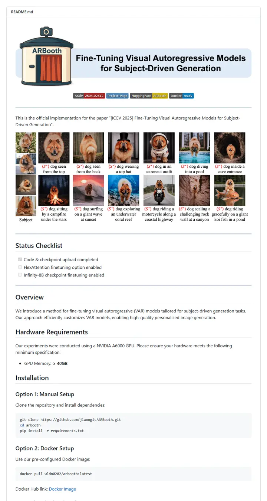

jiwoogit/VARBooth
A photo booth at a pet show: a drawn kiosk holds up the paper title like a shop sign, and a wall of portrait prints of one fluffy dog does the rest.

Checked against the rendered page. README names the project ARBooth while the repo is VARBooth. shields.io now renders named color yellow as #d8b800, not the #dfb317 in METHOD_README's named-color table; the measured value is used.
Why it is here
The custom illustrated banner merges logo and title into one header image, with a captioned subject-driven sample grid and horizontal rules separating a status checklist from the rest of the docs.
Overview
Header Block
Badge Colors
Section Outline
Guidelines
More like this

adobe-research/obj-and-mat-selection
A conference proceedings page with its own table of contents: bold names on a centred line, a small ACM SIGGRAPH seal, six slim tags, and a grid of watermelon and kitchen shots washed in teal where the model chose.

Chuan-10/AGILE
A lab bench under bright light: a five-letter name, a strip of heavy uppercase tags, then a contact sheet of hands gripping scissors, mugs and controllers.

coral-lab-asu/CRAFT
A tool manual with a conference ribbon: one centred title, a long strip of emoji-tagged badges, a dotted link bar, then a three-row table that explains the whole method before the first install line.

damon-demon/SpanUQ
A command-line tool's manual with a conference stamp: a bracketed headline, four small colored tabs, a dotted jump bar, and numbers before the first paragraph ends.

deepmancer/HairPort
A paper laid out as a press kit: a row of loud capital-letter tags, a dated bulletin, and numbered figures that each carry a caption like a journal page, all separated by thick grey rules.

donaldssh/K-Merge
A conference title slide pinned to a white wall: one centred heading, a quiet credit block, a short strip of grey-and-color tags, then a pastel block diagram that tells the story before a word of prose.